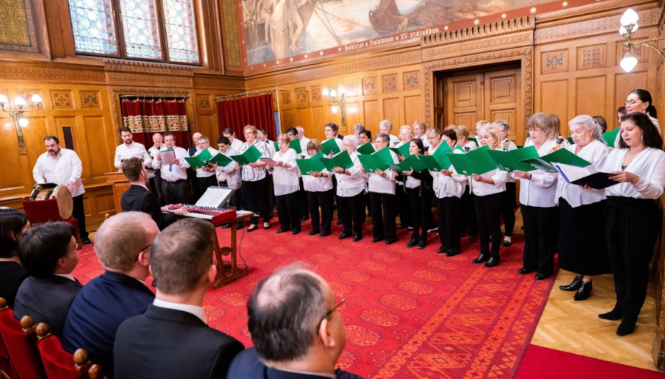
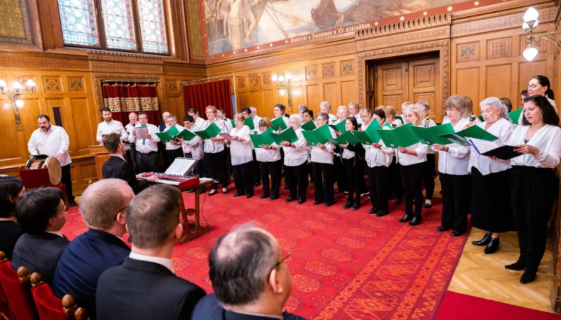

Mozdulj oxigénnel
2018 Április
2018. áprilisában a Légzéssel a Lélekért Alapítvány a Törökbálinti
Tüdőgyógyintézet éves tudományos konferenciáját rendezte meg a
törökbálinti művelődési házban. A Sing Lung Kórus Dés László: A zene
az kell
Mozat: Figaro házassága Sull Ariaáját és
a U2: MLK című számát énekelte

COPD világnap
2018 November
2018 novemberében a COPD Világnap alkalmából három tüdőgyógyintézet
betegeiből összeállított kórus a Benczur Hotel nagytermében lépett
fel. A betegek az Országos Korányi Pulmonológiai Intézetben, a
Mátrai Állami Gyógyintézetben és Farkasgyepüi Tüdőgyógyintézetben
gyakoroltak egy hétig művésztanáraikkal. Egy közös próbanap után
álltak szinpadra a COPD Világnapi Konferencia zárasaként.
Cseh Tamás -Bereményi Géza: Ima
és
Presser Gábor - Sztevanoity Dusán: Ha eljönnek az angyalok című
dalát énekelték.
A művésztanárok Rachmanyinov csodálatos Bogoroditse Dievo,
Raduisia dalát adták elő.
„Ápolók” könyv megjelenése 2018
2018
„Megindító portrékötetet jelentetett meg áprilisban a Törökbálinti Tüdőgyógyintézet légzés rehabilitációs osztályának Légzéssel a Lélekért alapítványa. Artner Szilvia író és Déri Miklós fotóművész munkája az egészségügyi dolgozók áldozatos munkájára hívja fel a figyelmet, és egyben tisztelgés az osztály ápolói előtt.”
 

WHO és parlamenti karácsony
2019 December
2019. adventjén a SingLung Kórus a WHO Magyarországi Irodájának konkresszusán és az Emeberi Erőforrások Minisztériuma Egészségügyi Államtitkárságának a Parlamentben tartott karácsonyi ünnepségén vett részt.
A világjárvány
2020

Fellépés a Fesztivál zenekarral
2021 Október
A világjárvány nem hagyta érintetlenül a kórust sem. Az interneten igyekeztünk kapcsolódni és gyakorolni. Egy véletlen találkozás egy különleges meghívást eredményezett. Abban a megtiszteltetésben részesült a Kórus, hogy a MÜPA szinpadán Fischer Iván meghívására a Fesztiválzenekar egyik nyitás utáni első koncertjén léphettünk fel. Középkori jókedvű diákdalokat adott elő a Kórus különleges orgonasíp kísérettel. Fischer Iván elismeréséről és őszinte támogatásáról biztosította a Kórust és a SingLung módszert. Segítségükkel egy film is készült. Hatalmas élmény volt ilyen nagy és értő közönség előtt énekelni.

Aria Libera
2022 Július
2022 júliusában SingLung Kórus először vállalakozott egy 50 perces
műsorra, ahol immáron a mozgásnak, az rest izmainak finom
összehangolásának is szerepe volt. Phillip György az ismertetőben
így írt:
„… az Aria Libera a szabad levegő a művészi alkotás egyensúlyát
is jelenti, amiben egyszerre van jelen haladás és hagyomány. Az
emberi létezés egyensúlyra törekvésében pedig egyszerre vannak
jelen ellentétes igazságok. Az egyik nincs a másik nélkül, e
kontrasztok darabjai együtt adják az egészet. Az előadás
alappgondolatát az a kép adta, ami végül módszerünk logoja lett: a
kivirágzott tüdő. Ha egymás mellé képzelünk egy tüdőt és egy fa
ágait vagy gyökérzetét, meglepő hasonlóságokat fedezhetünk fel. A
fa a bolygó tüdeje. Mi azt lélegezzük be, amit ő kilélelgez és
amit mi kilélegzünk, ő azt lélegzi be. Együtt vagyunk a
természet….”